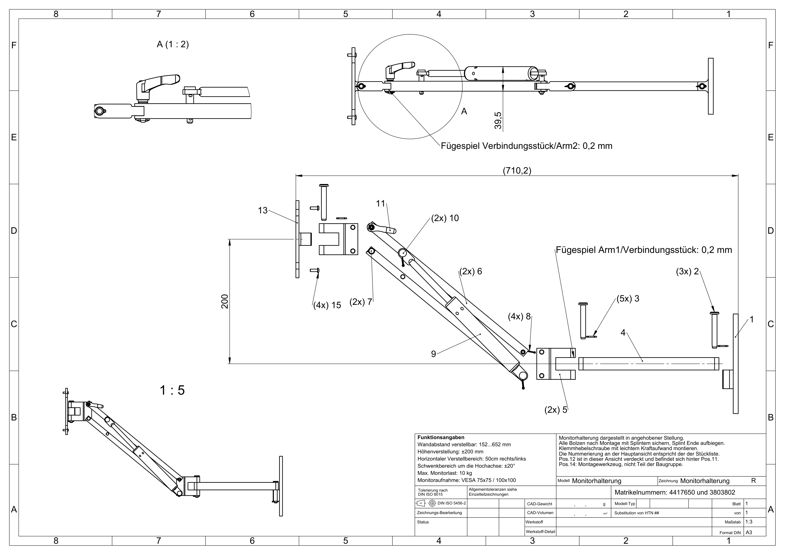

max. Monitorlast
KONSTRUKTION · 2026
Dein Monitor.
Genau in Position.
Eine wandmontierte Monitorhalterung mit Parallelogramm-Kinematik, Gasfederunterstützung und manueller Klemmung – entwickelt für flexible Positionierung bei hoher Stabilität.
Mount Ing. — Your screen, your Position.
FINAL CONCEPT · SOLIDWORKS
horizontal rechts / links
Höhenverstellung
VESA-Lochmuster
PRODUKT
Eine Halterung.
Viele Positionen.
Das System kombiniert lineare Reichweite, Höhenverstellung und Schwenkbewegungen, ohne den Monitor jedes Mal neu montieren zu müssen.
Wandabstand
Von 150 bis 650 mm – kompakt an der Wand oder weit in den Raum ausgefahren.
Höhe
Ein vertikaler Verstellbereich von ±200 mm wird über das Parallelogramm realisiert.
Seitlich
500 mm rechts und links sorgen für einen großen horizontalen Arbeitsbereich.
Schwenken
Der Monitor lässt sich um die Hochachse um ±20° schwenken.
ENGINEERING
Mechanik,
die mitarbeitet.
Die Höhenverstellung basiert nicht auf einem starren Gelenk, sondern auf einem gasfederunterstützten Parallelogramm. Dadurch bleibt die Bedienkraft kontrollierbar und das Restmoment kann manuell geklemmt werden.
01 · KINEMATIK
Parallelogramm statt Kompromiss.
Zwei gleichlange Arm-2-Profile mit einem Gelenkabstand von 315 mm bilden die zentrale Höhenkinematik. Für die geforderten ±200 mm ergibt sich ein notwendiger Armwinkel von rund ±39,4°.
Gelenkabstand
315 mm
GASFEDER
SUSPA 16-4
Der Anschluss wurde auf 250 mm optimiert. Die ausgewählte SUSPA-16-4-Gasfeder wird mit 850 N Ausschubkraft konfiguriert und bietet mit 95 mm Hub ausreichend Reserve gegenüber dem rechnerisch benötigten Arbeitsweg von 47,92 mm.
- Auslegungsbereich
- ca. 764–925 N
- gewählte Ausschubkraft
- 850 N
- Hub Kaufteil
- 95 mm
- Länge ausgefahren
- 283 mm
- Länge eingefahren
- 188 mm
- Kolbenstange / Rohr
- Ø10 / Ø22 mm
KLEMMUNG
Norelem 06600-50-1061
Der Klemmhebel nimmt das verbleibende Restmoment auf. Aus der Auslegung ergibt sich eine erforderliche Klemmkraft von rund 3,47 kN.
- Innengewinde
- M6
- Grundkörper
- Hochleistungsthermoplast
- Farbe
- RAL 7021
- Länge A1
- 46,8 mm
- Gewicht
- ca. 12,1 g
Die 3,47 kN sind eine Anforderung aus der eigenen Auslegung – keine Herstellerangabe des Klemmhebels.
Datenblatt ansehen ↗AUSLEGUNG
Grob dimensioniert.
Nachvollziehbar nachgewiesen.
Die Bauteile wurden nicht nur geometrisch modelliert. Kräfte, Spannungen, Lochleibung, Ausreißen, Bolzenbeanspruchung und kritische Querschnitte wurden für die grobe Bauteildimensionierung geprüft.
Bolzen Festigkeitsklasse 8.8
Der kritisch betrachtete Ø6-mm-Bolzen wird in Doppelscherung und zusätzlich auf Biegung untersucht. Die konservativ ermittelte Vergleichsspannung bleibt unter der für die Auslegung angesetzten zulässigen Spannung.
Drehteil 42CrMo4 + QT
Durch die außermittige Gasfederanbindung war ein zusätzliches gestuftes Drehteil notwendig. Es führt die Gasfeder kollisionsfrei am Arm 2 vorbei und überträgt die Kraft in die beiden U-Profil-Schenkel.
Gasfederanschluss 250 mm optimiert
Der ursprüngliche Anschluss bei 125 mm hätte eine deutlich größere Kraftschwankung erzeugt. Mit 250 mm liegt die berechnete Gasfederkraft über die drei untersuchten Stellungen ungefähr zwischen 764 und 925 N.
MATERIAL & FERTIGUNG
Jedes Bauteil
bekommt seinen Prozess.
Materialwahl und Fertigungsverfahren wurden an Geometrie, Belastung und wirtschaftliche Herstellbarkeit angepasst.
Wandhalter
G20Mn5+N · 1.6220
Sandguss, Normalisieren, Planfräsen, Bohren und Pulverbeschichten.
Arm 1
EN AW-6082-T6
Strangpressprofil, Ablängen, CNC-Fräsen, Bohren, Entgraten und Eloxieren.
Verbindungsstücke
EN AW-6082-T6
15-mm-Blech, CNC-Außenkontur und Taschen, Bohren, Verrunden und Eloxieren.
Arm 2 · 2×
EN AW-6082-T6
U-Profil, Sägen, CNC-Freischnitte, Bohren, Entgraten und Eloxieren.
VESA-Platte
EN-AC-44400
Aluminium-Druckguss, Entgraten, Bohren/Reiben und Oberflächenbehandlung.
Drehteil
42CrMo4 + QT
Gestufte Stahlkomponente zur außermittigen, kollisionsfreien Gasfederanbindung.
ENTWICKLUNG
Von „Wie?“
zu „So.“
Die Konstruktion entstand iterativ: erst Anforderungen verstehen, dann grob konstruieren, rechnen, Kaufteile auswählen und die Geometrie gezielt verfeinern.
01
ANFORDERUNGEN
Problem definieren
Wandmontage, 10 kg Last, VESA, Höhen- und Seitenverstellung sowie manuelle Feststellbarkeit.
02
KONZEPT
Parallelogramm + Gasfeder
Die erste Idee mit mehreren Klemmgelenken wurde verworfen. Das Parallelogramm bietet die bessere Höhenkinematik.
03
CAD
Grob zu fein
Erst wurde die grundsätzliche Geometrie in SolidWorks aufgebaut, anschließend anhand der Berechnungen angepasst.
04
AUSLEGUNG
Kräfte statt Bauchgefühl
Gasfeder, Bolzen, Schrauben, Klemmung und kritische Bauteilquerschnitte wurden rechnerisch betrachtet.
05
DETAILLIERUNG
Kaufteile integrieren
Mit realen Normteilen wurden Kollisionen sichtbar – daraus entstand unter anderem das zusätzliche Drehteil.
06
FINAL
Zeichnung & Dokumentation
Einzelteile, Gesamtbaugruppe, Stückliste, Fertigungskonzept und Nachweise bilden die finale Abgabe.
CAD
Technik
im Detail.
Die finale Baugruppe bildet den vollständigen Verstellbereich ab und enthält Gasfeder, Klemmhebel, Bolzen sowie die VESA-Aufnahme.
Gesamtzeichnung öffnen ↗
PDF · GesamtzeichnungTECHNISCHE DATEN
Die Zahlen
auf einen Blick.
Maximale Monitorlast10 kg
Wandabstand150–650 mm
Höhenverstellung±200 mm
Horizontaler Verstellbereich500 mm rechts / links
Schwenkbereich Hochachse±20°
MonitoraufnahmeVESA 75 × 75 / 100 × 100
Arm 1225 mm
Arm 2325 mm · 315 mm Gelenkabstand
GasfederSUSPA 16-4 · 95 mm Hub
KlemmhebelNorelem · M6
GelenkbolzenØ6 mm / Ø8 mm · mit Splintsicherung
VESA-Schrauben4 × M4 × 12 mm · Flachkopf Innensechskant
Empfehlung WandmontageFischer DuoPower 12×60 S · M8×80 mm
DOKUMENTATION
Alles,
was dahinter steckt.
Die Website ist mit dem finalen Stand der Projektdokumentation abgeglichen. Die Unterlagen unten entsprechen den aktuell bereitgestellten Dokumenten.
Projekt & empfohlene Lesereihenfolge
PDF
↗
01
↗
02
↗
03
↗
04
↗
05
↗
06
↗
07
↗
08
↗
Making-of & Lesehinweis
Entwicklungsprozess und Überblick über die Dokumentation
Material & Fertigung
Werkstoffe, Fertigungsverfahren und Begründungen
Konstruktionsbegründung
Warum die Bauteile genau so gestaltet wurden
Wandabstand & Höhenverstellung
Kinematik, Bewegungsstudie und Verstellbereiche
Stückliste
15 Positionen inklusive Kauf- und Normteilen
Bolzenauslegung
Auslegung der Ø6- und Ø8-mm-Gelenkbolzen
Schraubenauslegung
Wandbefestigung, VESA-Schrauben und Klemmhebelschraube
Gasdruckfederauslegung
Geometrie, Arbeitsweg und Auswahl der 850-N-Gasfeder
Bauteilauslegung & Festigkeit
Kräfte, Spannungen und Nachweise der kritischen Querschnitte
Finale Zeichnungen
CAD
↗
CAD
↗
CAD
↗
CAD
↗
CAD
↗
CAD
↗
CAD
↗
Gesamtzeichnung
Aktueller Stand der vollständigen Monitorhalterung
Wandhalter
Einzelteilzeichnung
Arm 1
Einzelteilzeichnung
Arm 2
Einzelteilzeichnung
Verbindungsstück
Einzelteilzeichnung
VESA-Platte
Einzelteilzeichnung
Drehteil
Einzelteilzeichnung des Gasfeder-Adapters
Kaufteile